New Order
Order creation through the Client Center is disabled by default. You need to enable the respective global JSON settings first.
Once that's done, users with external role L20 - Orders and above will get access to the New Order page.
This is a multi-tab interface designed to handle the filling out and placement of new sales orders.
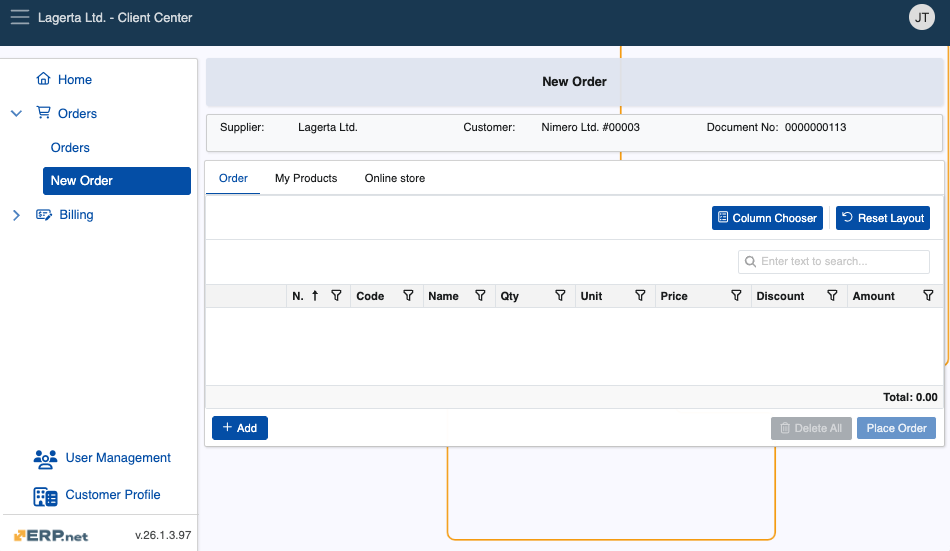
Structure
New Order consists of two primary tabs, but it can be configured to include more:
Order - This is where the order is built. You can add products manually by entering their code and quantity.

My Products - All customer products will appear here. You can add them to the order simply by specifying their quantities.
They will automatically appear in the Order tab.
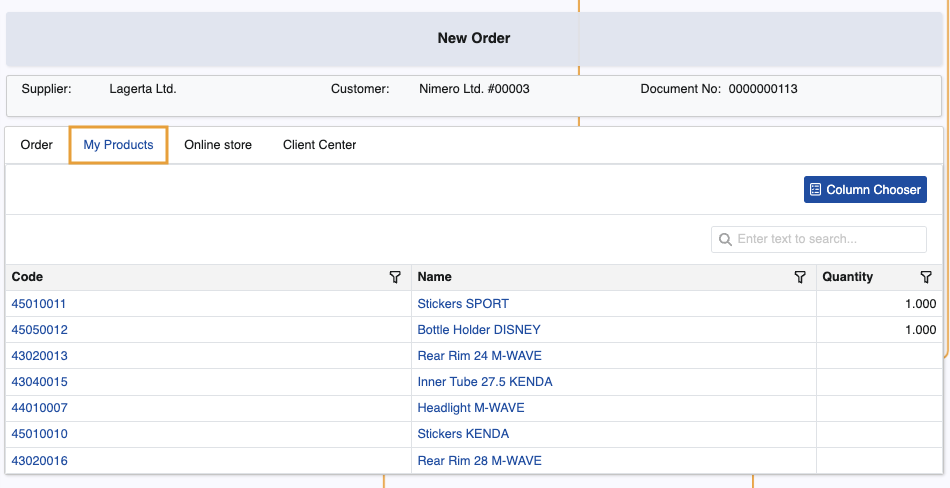
If the JSON setting for hiding the customer's default distribution channel is disabled and that channel has linked products, an extra tab named after the channel will appear. It will display the related products, which you can add to the order.
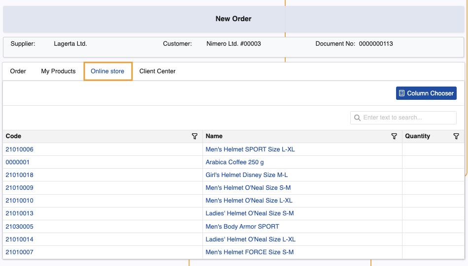
If the JSON setting for specifying a custom channel for the Client Center is configured and that channel has linked products, an extra tab named after that channel will appear. It will display the related products, which you can add to the order.
In the event where a custom JSON configuration is not set, the system will automatically link the sales order to a distribution channel with code "CC" and name "Client Center". If such channel does not exist, it will be created after the order is placed.
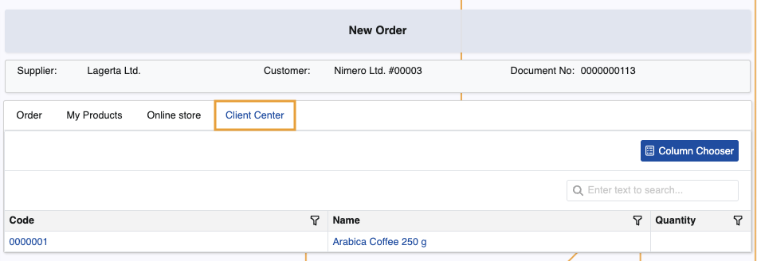
Create a new order
To begin, add products to the order. There are several ways to do this:
1.1. From the Order tab, click the Add button. This will reveal the Code and Qty fields, where you can respectively provide the code of the product and how many instances of it you need ordered.
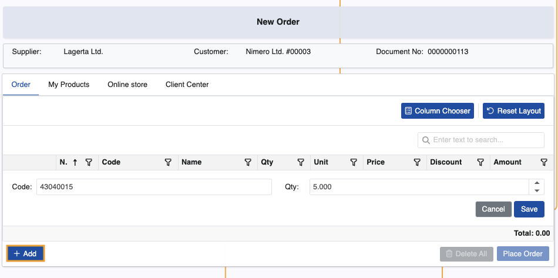
When you click Save, the product will be added with all the respective information about it, such as Unit, Price, and Discount.
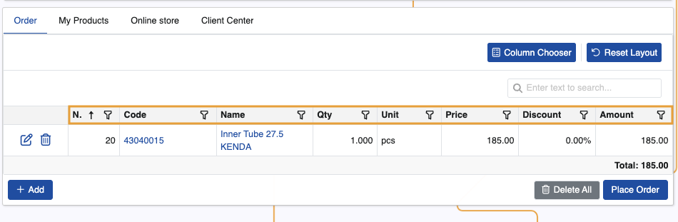
1.2. From the My Products tab, click on the Quantity field of a customer product row and specify the exact quantity you need ordered.
This will automatically add it in the Order tab.
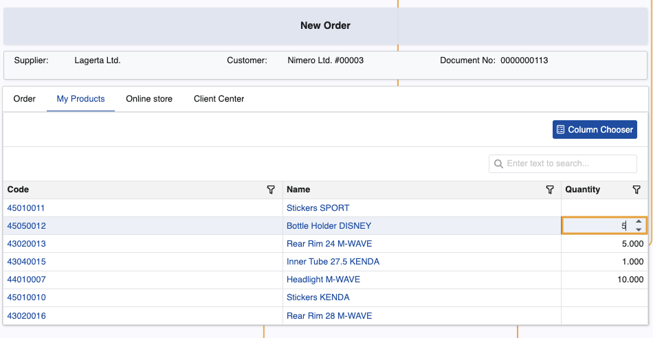
1.3. Depending on how a Client Center is configured, users may add products linked to their customer's default distribution channel.
The process to add them is identical to the My Products tab.
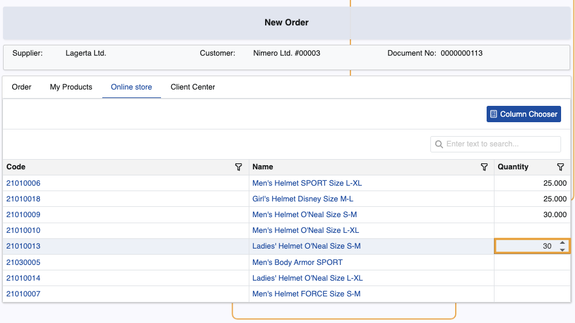
1.4. If the Client Center's distribution channel has products linked to it, they will be available for selection as well.
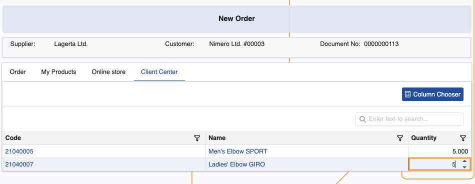
When you're done adding the quantities of the desired products, you can always edit or delete some of them if needed.
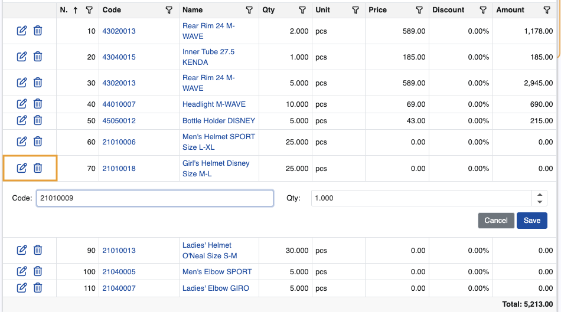
To finish the order, click Place Order. You'll be asked to confirm.
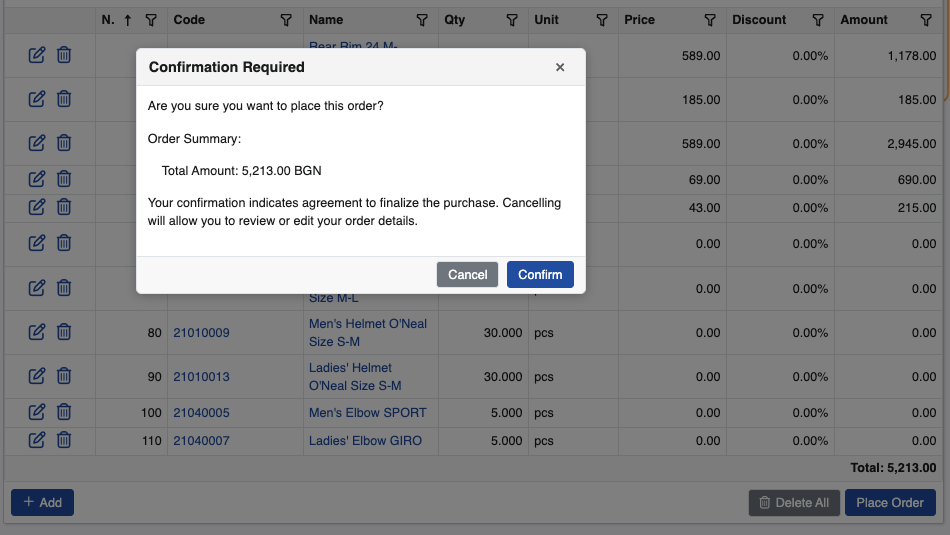
Newly created orders are stored in the Orders page.
Note
You can start an order and switch to a different page or choose to place it later.
The latest active user session is retaind and the order is automatically saved and registered with status "New".